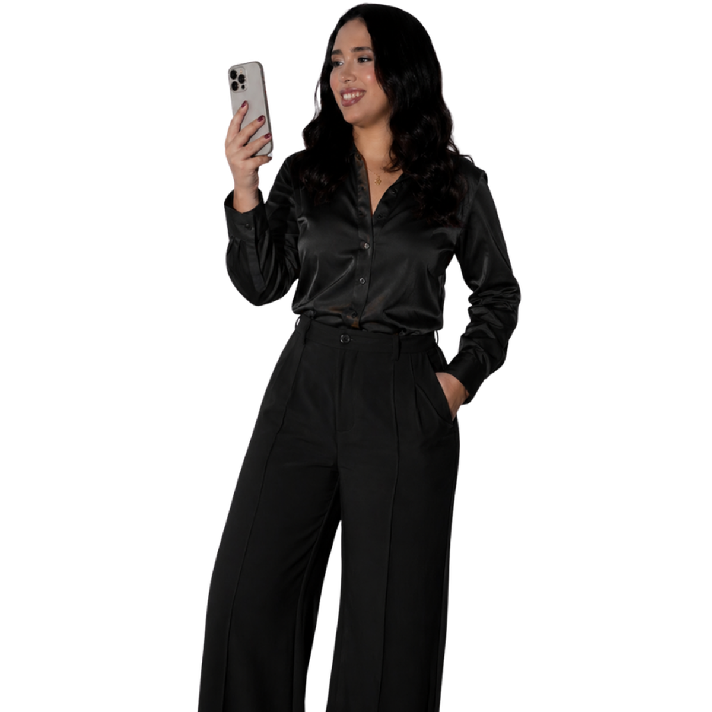

Quem sou eu?
Prazer,
Prazer,
Isadora Rezende
2 anos criando conteúdo estratégico para redes sociais.
Social media, videomaker e storymaker para marcas que querem aparecer com profissionalismo.
Reels, stories e registros em tempo real com direção, estética e agilidade.
Meu diferencial: roteiro, ângulos, músicas e cores pensados para gerar desejo e conexão.